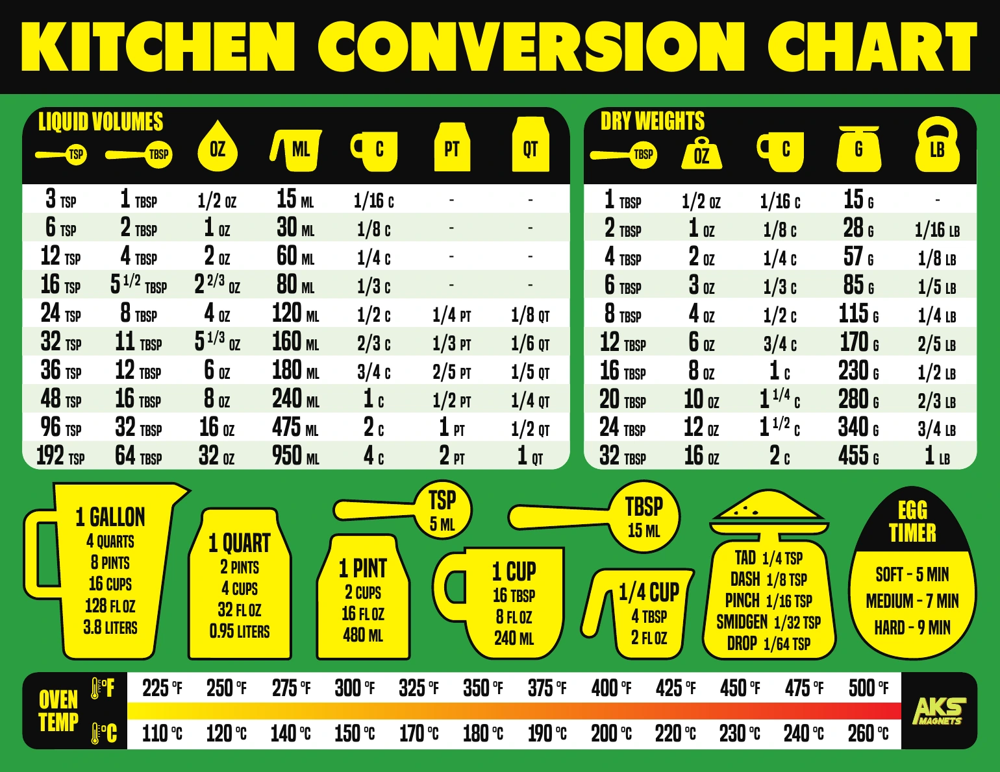
Easy-to-read magnetic guides for cooking, diets, laundry, and more. Designed to keep the information you need right where you can see it.
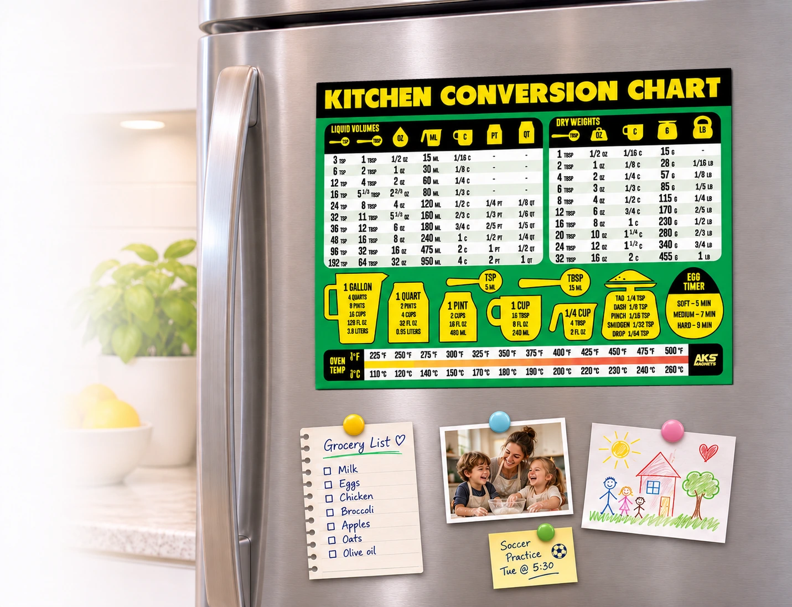
Our Best-Selling Magnets
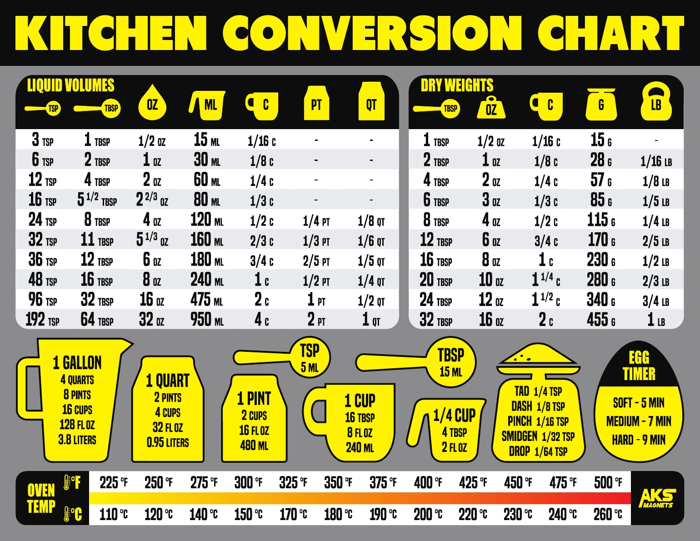
Kitchen Conversion Chart — Gray
The kitchen conversion magnet reference in a neutral gray design.
View On Amazon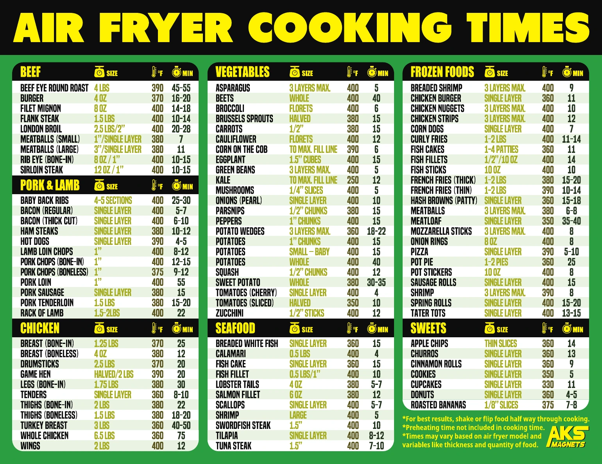
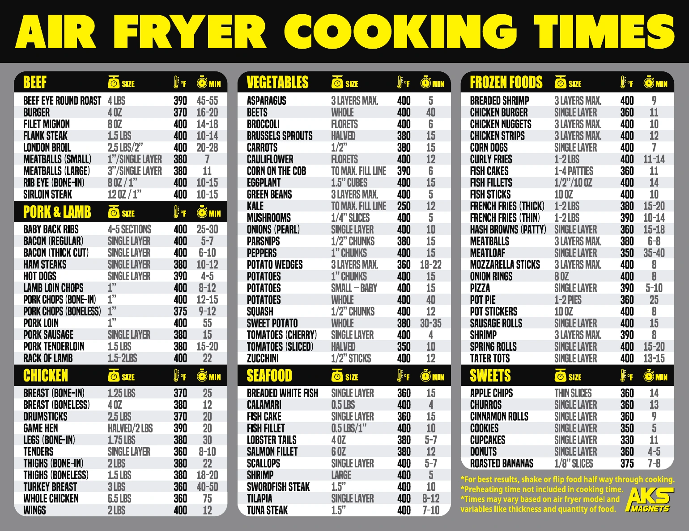
Air Fryer Cooking Times — Gray
The same air-fryer reference guide in a clean gray design.
View On Amazon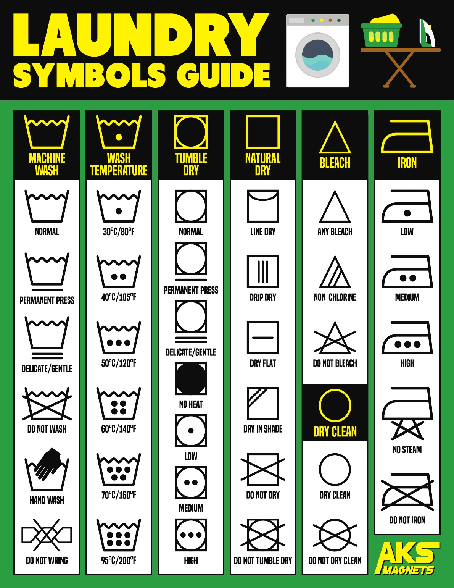
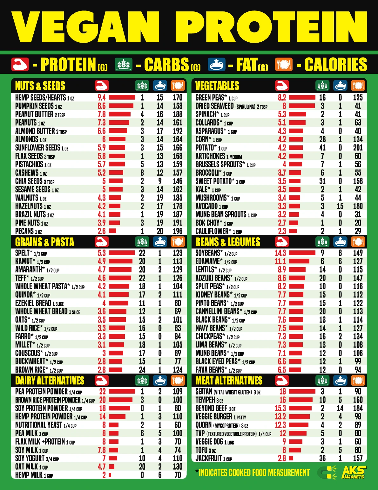
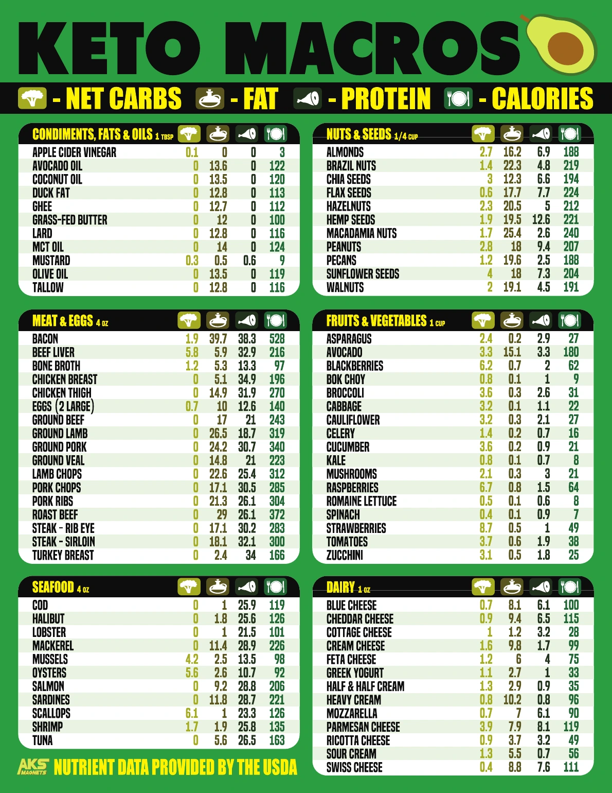
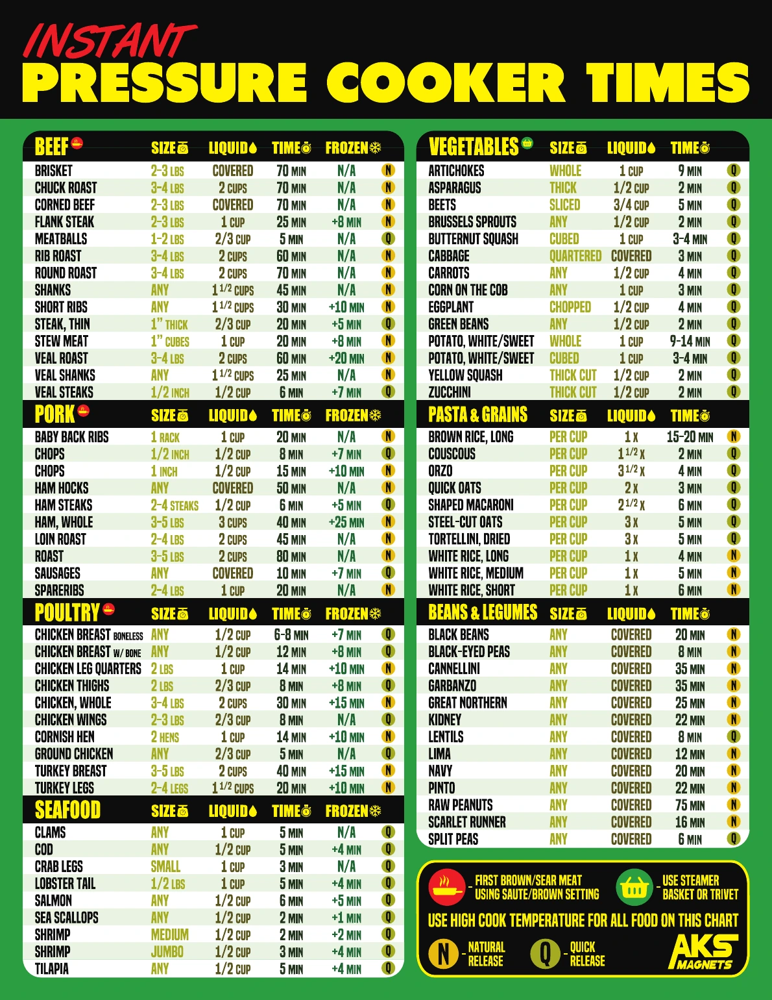
Why Customers Choose AKS Magnets
Designed to be useful, readable, and built for everyday use.
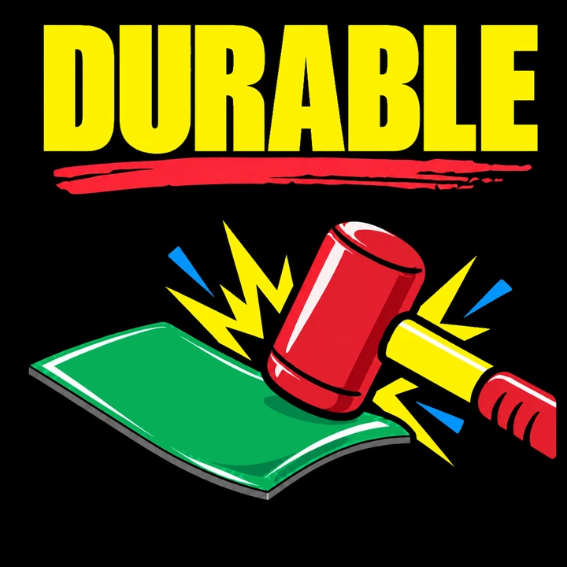
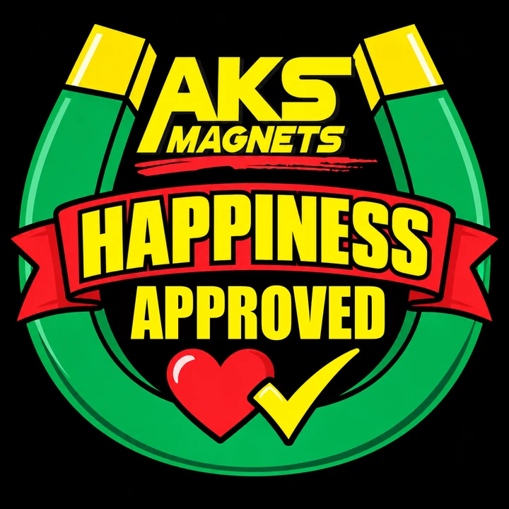
Helpful Guides & Resources
Practical articles, reference charts and how-to guides. This section will grow as we build the AKS resource library.
Air Fryer Cooking Times Guide
Useful evergreen reference content designed to help visitors and lead naturally to the matching AKS magnet.
View guide →Kitchen Measurement Conversion Guide
Useful evergreen reference content designed to help visitors and lead naturally to the matching AKS magnet.
View guide →Laundry Symbols Explained
Useful evergreen reference content designed to help visitors and lead naturally to the matching AKS magnet.
View guide →Vegan Protein Sources Guide
Useful evergreen reference content designed to help visitors and lead naturally to the matching AKS magnet.
View guide →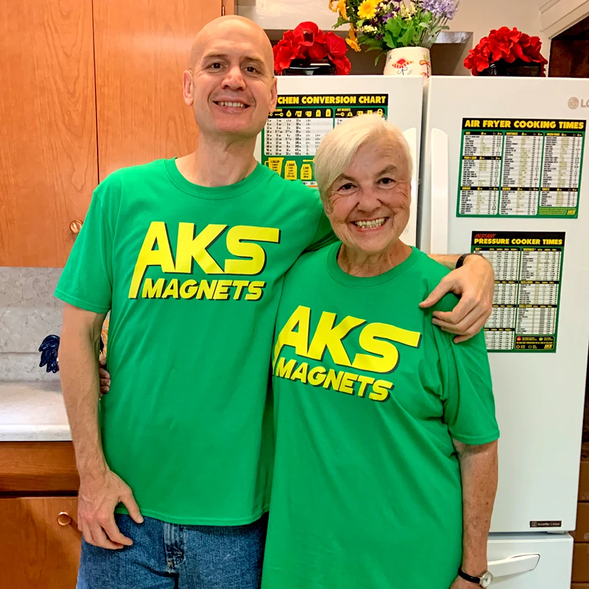
The People Behind AKS Magnets
AKS Magnets is a mother and son business. Our magnets are designed by us with commitment, quality and enthusiasm. We are a two person team that is involved in every step of the process. Our hope is that you find our magnets so useful that you smile every time you use them.